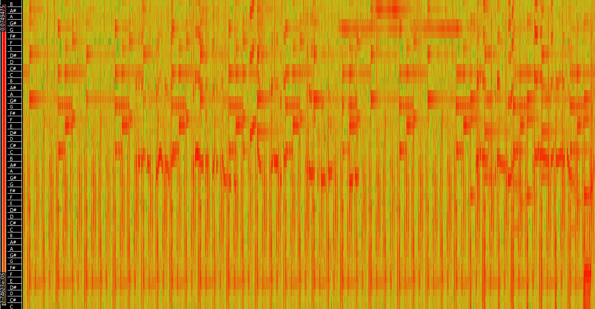

Timbre & Texture
The spectrograms reveal that Massive Attack’s has not only evolved in rhythm, but also in timbre and texture. In their early work like Five Man Army there is a lot of dense activity in the lower frequencies, reflecting its heavy basslines and beats. After Blue lines Massive Attack started obtaining a more refined and layered sound. This is shown by the spectrogram of Protection, which still contains consistent low frequencies, but already has way more happening in the higher frequencies, with switching from monotone rap vocals in Five Man Army to the tonally varied female vocals on Protection being one of the reasons. Paradise Circus introduces even more overall activity throughout the frequency spectrum, but less activity in the lower end. Paradise Circus’ spectrogram shows a clearer distinction between low, mid and high frequencies than the 2 tracks that came beforehand. This reflects a shift towards a more carefully produced sound with even more atmosphere.
Paradise Circus (2010)

Spectrogram
Shows very balanced activity across all frequency bands. With less low end activity compared to the two previous songs, but more activity in the mid and high frequences. With the red representing the simple keys and soft vocals of Hope Sandoval.